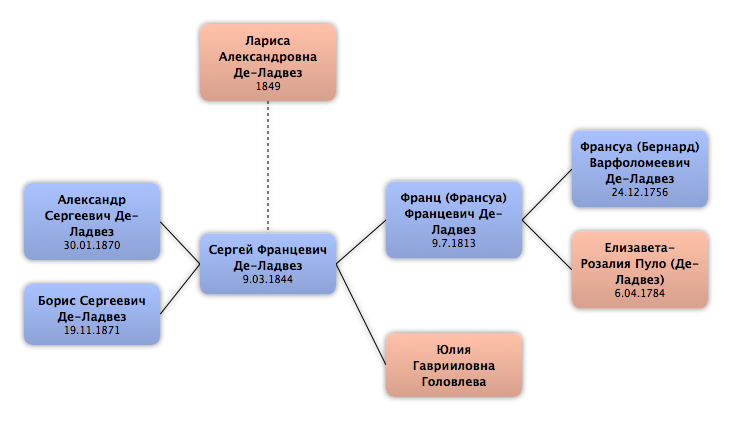

Домой
Домой
 Люди
Люди
 Семьи
Семьи
 Источники
Источники
 Диаграммы
Диаграммы
 Статистика
Статистика
Лариса Александровна Де-Ладвез

Контекст

Родители
| Отец | Дата рождения | Мать | Дата рождения |
|---|
Родители и дети
| Партнёры | Дата рождения | Дети |
|---|---|---|
 Сергей Францевич Де-Ладвез Сергей Францевич Де-Ладвез
|
9.03.1844 |
Александр Сергеевич Де-Ладвез
Борис Сергеевич Де-Ладвез
|
События
Факты
Медиа
Примечание
Источники
Родство
| Имя | Степень родства | Дата рождения | Место рождения | Дата смерти | Место смерти |
|---|---|---|---|---|---|
| Партнёров | |||||
| Партнёр или муж | 9.03.1844 | 23.09.1887 | |||
| Дети | |||||
| Сын | 30.01.1870 | ||||
| Сын | 19.11.1871 | Москва, Россия | 25.04.1921 | Челябинск, Россия | |
| Внуки | |||||
| Внук | 31.12.1895 | г. Сороки Бессарабской губернии, Россия | 27.10.1937 | Оренб. обл, СССР | |
| Внук | 18.06.1900 | ||||
| Внук | 16.07.1900 | ||||
| Внук | 1901 | ||||
| Внучка | 1905 | ||||
| Жёны сыновей (мужья дочерей) | |||||
| Сноха | |||||